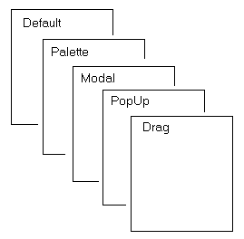

Class JLayeredPane
- All Implemented Interfaces:
ImageObserver, MenuContainer, Serializable, Accessible
- Direct Known Subclasses:
JDesktopPane
JLayeredPane adds depth to a JFC/Swing container,
allowing components to overlap each other when needed.
An Integer object specifies each component's depth in the
container, where higher-numbered components sit "on top" of other
components.
For task-oriented documentation and examples of using layered panes see
How to Use a Layered Pane,
a section in The Java Tutorial.
Example:

JLayeredPane divides the depth-range
into several different layers. Putting a component into one of those
layers makes it easy to ensure that components overlap properly,
without having to worry about specifying numbers for specific depths:
- DEFAULT_LAYER
- The standard layer, where most components go. This the bottommost layer.
- PALETTE_LAYER
- The palette layer sits over the default layer. Useful for floating toolbars and palettes, so they can be positioned above other components.
- MODAL_LAYER
- The layer used for modal dialogs. They will appear on top of any toolbars, palettes, or standard components in the container.
- POPUP_LAYER
- The popup layer displays above dialogs. That way, the popup windows associated with combo boxes, tooltips, and other help text will appear above the component, palette, or dialog that generated them.
- DRAG_LAYER
- When dragging a component, reassigning it to the drag layer ensures that it is positioned over every other component in the container. When finished dragging, it can be reassigned to its normal layer.
JLayeredPane methods moveToFront(Component),
moveToBack(Component) and setPosition can be used
to reposition a component within its layer. The setLayer method
can also be used to change the component's current layer.
Details
JLayeredPane manages its list of children like
Container, but allows for the definition of a several
layers within itself. Children in the same layer are managed exactly
like the normal Container object,
with the added feature that when children components overlap, children
in higher layers display above the children in lower layers.
Each layer is a distinct integer number. The layer attribute can be set
on a Component by passing an Integer
object during the add call.
For example:
layeredPane.add(child, JLayeredPane.DEFAULT_LAYER);
or
layeredPane.add(child, Integer.valueOf(10));
The layer attribute can also be set on a Component by calling
layeredPaneParent.setLayer(child, 10)
on the JLayeredPane that is the parent of component. The layer
should be set before adding the child to the parent.
Higher number layers display above lower number layers. So, using numbers for the layers and letters for individual components, a representative list order would look like this:
5a, 5b, 5c, 2a, 2b, 2c, 1a
where the leftmost components are closest to the top of the display.
A component can be moved to the top or bottom position within its
layer by calling moveToFront or moveToBack.
The position of a component within a layer can also be specified directly. Valid positions range from 0 up to one less than the number of components in that layer. A value of -1 indicates the bottommost position. A value of 0 indicates the topmost position. Unlike layer numbers, higher position values are lower in the display.
Note: This sequence (defined by java.awt.Container) is the reverse of the layer numbering sequence. Usually though, you will useHere are some examples using the method add(Component, layer, position): Calling add(5x, 5, -1) results in:moveToFront,moveToBack, andsetLayer.
5a, 5b, 5c, 5x, 2a, 2b, 2c, 1a
Calling add(5z, 5, 2) results in:
5a, 5b, 5z, 5c, 5x, 2a, 2b, 2c, 1a
Calling add(3a, 3, 7) results in:
5a, 5b, 5z, 5c, 5x, 3a, 2a, 2b, 2c, 1a
Using normal paint/event mechanics results in 1a appearing at the bottom
and 5a being above all other components.
Note: that these layers are simply a logical construct and LayoutManagers will affect all child components of this container without regard for layer settings.
Warning: Swing is not thread safe. For more information see Swing's Threading Policy.
Warning:
Serialized objects of this class will not be compatible with
future Swing releases. The current serialization support is
appropriate for short term storage or RMI between applications running
the same version of Swing. As of 1.4, support for long term storage
of all JavaBeans
has been added to the java.beans package.
Please see XMLEncoder.
- Since:
- 1.2
-
Nested Class Summary
Nested ClassesModifier and TypeClassDescriptionprotected classThis class implements accessibility support for theJLayeredPaneclass.Nested classes/interfaces declared in class JComponent
JComponent.AccessibleJComponentNested classes/interfaces declared in class Container
Container.AccessibleAWTContainerNested classes/interfaces declared in class Component
Component.AccessibleAWTComponent, Component.BaselineResizeBehavior, Component.BltBufferStrategy, Component.FlipBufferStrategy -
Field Summary
FieldsModifier and TypeFieldDescriptionstatic final IntegerConvenience object defining the Default layer.static final IntegerConvenience object defining the Drag layer.static final IntegerConvenience object defining the Frame Content layer.static final StringBound propertystatic final IntegerConvenience object defining the Modal layer.static final IntegerConvenience object defining the Palette layer.static final IntegerConvenience object defining the Popup layer.Fields declared in class JComponent
listenerList, TOOL_TIP_TEXT_KEY, ui, UNDEFINED_CONDITION, WHEN_ANCESTOR_OF_FOCUSED_COMPONENT, WHEN_FOCUSED, WHEN_IN_FOCUSED_WINDOWFields declared in class Component
accessibleContext, BOTTOM_ALIGNMENT, CENTER_ALIGNMENT, LEFT_ALIGNMENT, RIGHT_ALIGNMENT, TOP_ALIGNMENTFields declared in interface ImageObserver
ABORT, ALLBITS, ERROR, FRAMEBITS, HEIGHT, PROPERTIES, SOMEBITS, WIDTH -
Constructor Summary
Constructors -
Method Summary
Modifier and TypeMethodDescriptionGets the AccessibleContext associated with this JLayeredPane.intgetComponentCountInLayer(int layer) Returns the number of children currently in the specified layer.getComponentsInLayer(int layer) Returns an array of the components in the specified layer.Returns the hashtable that maps components to layers.intReturns the index of the specified Component.intReturns the layer attribute for the specified Component.static intGets the layer property for a JComponent, it does not cause any side effects like setLayer().static JLayeredPaneConvenience method that returns the first JLayeredPane which contains the specified component.protected IntegergetObjectForLayer(int layer) Returns the Integer object associated with a specified layer.intGet the relative position of the component within its layer.intReturns the highest layer value from all current children.protected intinsertIndexForLayer(int layer, int position) Primitive method that determines the proper location to insert a new child based on layer and position requests.booleanReturns false if components in the pane can overlap, which makes optimized drawing impossible.intReturns the lowest layer value from all current children.voidMoves the component to the bottom of the components in its current layer (position -1).voidMoves the component to the top of the components in its current layer (position 0).voidPaints this JLayeredPane within the specified graphics context.protected StringReturns a string representation of this JLayeredPane.static voidputLayer(JComponent c, int layer) Sets the layer property on a JComponent.voidremove(int index) Remove the indexed component from this pane.voidRemoves all the components from this container.voidSets the layer attribute on the specified component, making it the bottommost component in that layer.voidSets the layer attribute for the specified component and also sets its position within that layer.voidsetPosition(Component c, int position) Moves the component topositionwithin its current layer, where 0 is the topmost position within the layer and -1 is the bottommost position.Methods declared in class JComponent
addAncestorListener, addNotify, addVetoableChangeListener, computeVisibleRect, contains, createToolTip, disable, enable, firePropertyChange, firePropertyChange, fireVetoableChange, getActionForKeyStroke, getActionMap, getAlignmentX, getAlignmentY, getAncestorListeners, getAutoscrolls, getBaseline, getBaselineResizeBehavior, getBorder, getBounds, getClientProperty, getComponentGraphics, getComponentPopupMenu, getConditionForKeyStroke, getDebugGraphicsOptions, getDefaultLocale, getFontMetrics, getGraphics, getHeight, getInheritsPopupMenu, getInputMap, getInputMap, getInputVerifier, getInsets, getInsets, getListeners, getLocation, getMaximumSize, getMinimumSize, getNextFocusableComponent, getPopupLocation, getPreferredSize, getRegisteredKeyStrokes, getRootPane, getSize, getToolTipLocation, getToolTipText, getToolTipText, getTopLevelAncestor, getTransferHandler, getUI, getUIClassID, getVerifyInputWhenFocusTarget, getVetoableChangeListeners, getVisibleRect, getWidth, getX, getY, grabFocus, hide, isDoubleBuffered, isLightweightComponent, isManagingFocus, isOpaque, isPaintingForPrint, isPaintingOrigin, isPaintingTile, isRequestFocusEnabled, isValidateRoot, paintBorder, paintChildren, paintComponent, paintImmediately, paintImmediately, print, printAll, printBorder, printChildren, printComponent, processComponentKeyEvent, processKeyBinding, processKeyEvent, processMouseEvent, processMouseMotionEvent, putClientProperty, registerKeyboardAction, registerKeyboardAction, removeAncestorListener, removeNotify, removeVetoableChangeListener, repaint, repaint, requestDefaultFocus, requestFocus, requestFocus, requestFocusInWindow, requestFocusInWindow, resetKeyboardActions, reshape, revalidate, scrollRectToVisible, setActionMap, setAlignmentX, setAlignmentY, setAutoscrolls, setBackground, setBorder, setComponentPopupMenu, setDebugGraphicsOptions, setDefaultLocale, setDoubleBuffered, setEnabled, setFocusTraversalKeys, setFont, setForeground, setInheritsPopupMenu, setInputMap, setInputVerifier, setMaximumSize, setMinimumSize, setNextFocusableComponent, setOpaque, setPreferredSize, setRequestFocusEnabled, setToolTipText, setTransferHandler, setUI, setVerifyInputWhenFocusTarget, setVisible, unregisterKeyboardAction, update, updateUIMethods declared in class Container
add, add, add, add, add, addContainerListener, addImpl, addPropertyChangeListener, addPropertyChangeListener, applyComponentOrientation, areFocusTraversalKeysSet, countComponents, deliverEvent, doLayout, findComponentAt, findComponentAt, getComponent, getComponentAt, getComponentAt, getComponentCount, getComponents, getComponentZOrder, getContainerListeners, getFocusTraversalKeys, getFocusTraversalPolicy, getLayout, getMousePosition, insets, invalidate, isAncestorOf, isFocusCycleRoot, isFocusCycleRoot, isFocusTraversalPolicyProvider, isFocusTraversalPolicySet, layout, list, list, locate, minimumSize, paintComponents, preferredSize, printComponents, processContainerEvent, processEvent, remove, removeContainerListener, setComponentZOrder, setFocusCycleRoot, setFocusTraversalPolicy, setFocusTraversalPolicyProvider, setLayout, transferFocusDownCycle, validate, validateTreeMethods declared in class Component
action, add, addComponentListener, addFocusListener, addHierarchyBoundsListener, addHierarchyListener, addInputMethodListener, addKeyListener, addMouseListener, addMouseMotionListener, addMouseWheelListener, bounds, checkImage, checkImage, coalesceEvents, contains, createImage, createImage, createVolatileImage, createVolatileImage, disableEvents, dispatchEvent, enable, enableEvents, enableInputMethods, firePropertyChange, firePropertyChange, firePropertyChange, firePropertyChange, firePropertyChange, firePropertyChange, firePropertyChange, getBackground, getBounds, getColorModel, getComponentListeners, getComponentOrientation, getCursor, getDropTarget, getFocusCycleRootAncestor, getFocusListeners, getFocusTraversalKeysEnabled, getFont, getForeground, getGraphicsConfiguration, getHierarchyBoundsListeners, getHierarchyListeners, getIgnoreRepaint, getInputContext, getInputMethodListeners, getInputMethodRequests, getKeyListeners, getLocale, getLocation, getLocationOnScreen, getMouseListeners, getMouseMotionListeners, getMousePosition, getMouseWheelListeners, getName, getParent, getPropertyChangeListeners, getPropertyChangeListeners, getSize, getToolkit, getTreeLock, gotFocus, handleEvent, hasFocus, imageUpdate, inside, isBackgroundSet, isCursorSet, isDisplayable, isEnabled, isFocusable, isFocusOwner, isFocusTraversable, isFontSet, isForegroundSet, isLightweight, isMaximumSizeSet, isMinimumSizeSet, isPreferredSizeSet, isShowing, isValid, isVisible, keyDown, keyUp, list, list, list, location, lostFocus, mouseDown, mouseDrag, mouseEnter, mouseExit, mouseMove, mouseUp, move, nextFocus, paintAll, postEvent, prepareImage, prepareImage, processComponentEvent, processFocusEvent, processHierarchyBoundsEvent, processHierarchyEvent, processInputMethodEvent, processMouseWheelEvent, remove, removeComponentListener, removeFocusListener, removeHierarchyBoundsListener, removeHierarchyListener, removeInputMethodListener, removeKeyListener, removeMouseListener, removeMouseMotionListener, removeMouseWheelListener, removePropertyChangeListener, removePropertyChangeListener, repaint, repaint, repaint, requestFocus, requestFocus, requestFocusInWindow, resize, resize, setBounds, setBounds, setComponentOrientation, setCursor, setDropTarget, setFocusable, setFocusTraversalKeysEnabled, setIgnoreRepaint, setLocale, setLocation, setLocation, setMixingCutoutShape, setName, setSize, setSize, show, show, size, toString, transferFocus, transferFocusBackward, transferFocusUpCycle
-
Field Details
-
DEFAULT_LAYER
Convenience object defining the Default layer. Equivalent to Integer.valueOf(0). -
PALETTE_LAYER
Convenience object defining the Palette layer. Equivalent to Integer.valueOf(100). -
MODAL_LAYER
Convenience object defining the Modal layer. Equivalent to Integer.valueOf(200). -
POPUP_LAYER
Convenience object defining the Popup layer. Equivalent to Integer.valueOf(300). -
DRAG_LAYER
Convenience object defining the Drag layer. Equivalent to Integer.valueOf(400). -
FRAME_CONTENT_LAYER
Convenience object defining the Frame Content layer. This layer is normally only use to position the contentPane and menuBar components of JFrame. Equivalent to Integer.valueOf(-30000).- See Also:
-
LAYER_PROPERTY
-
-
Constructor Details
-
JLayeredPane
public JLayeredPane()Create a new JLayeredPane
-
-
Method Details
-
remove
-
removeAll
-
isOptimizedDrawingEnabled
Returns false if components in the pane can overlap, which makes optimized drawing impossible. Otherwise, returns true.- Overrides:
isOptimizedDrawingEnabledin classJComponent- Returns:
- false if components can overlap, else true
- See Also:
-
putLayer
Sets the layer property on a JComponent. This method does not cause any side effects like setLayer() (painting, add/remove, etc). Normally you should use the instance method setLayer(), in order to get the desired side-effects (like repainting).- Parameters:
c- the JComponent to movelayer- an int specifying the layer to move it to- See Also:
-
getLayer
Gets the layer property for a JComponent, it does not cause any side effects like setLayer(). (painting, add/remove, etc) Normally you should use the instance method getLayer().- Parameters:
c- the JComponent to check- Returns:
- an int specifying the component's layer
-
getLayeredPaneAbove
Convenience method that returns the first JLayeredPane which contains the specified component. Note that all JFrames have a JLayeredPane at their root, so any component in a JFrame will have a JLayeredPane parent.- Parameters:
c- the Component to check- Returns:
- the JLayeredPane that contains the component, or null if no JLayeredPane is found in the component hierarchy
- See Also:
-
setLayer
Sets the layer attribute on the specified component, making it the bottommost component in that layer. Should be called before adding to parent.- Parameters:
c- the Component to set the layer forlayer- an int specifying the layer to set, where lower numbers are closer to the bottom
-
setLayer
Sets the layer attribute for the specified component and also sets its position within that layer.- Parameters:
c- the Component to set the layer forlayer- an int specifying the layer to set, where lower numbers are closer to the bottomposition- an int specifying the position within the layer, where 0 is the topmost position and -1 is the bottommost position
-
getLayer
Returns the layer attribute for the specified Component.- Parameters:
c- the Component to check- Returns:
- an int specifying the component's current layer
-
getIndexOf
Returns the index of the specified Component. This is the absolute index, ignoring layers. Index numbers, like position numbers, have the topmost component at index zero. Larger numbers are closer to the bottom.- Parameters:
c- the Component to check- Returns:
- an int specifying the component's index
-
moveToFront
Moves the component to the top of the components in its current layer (position 0).- Parameters:
c- the Component to move- See Also:
-
moveToBack
Moves the component to the bottom of the components in its current layer (position -1).- Parameters:
c- the Component to move- See Also:
-
setPosition
Moves the component topositionwithin its current layer, where 0 is the topmost position within the layer and -1 is the bottommost position.Note: Position numbering is defined by java.awt.Container, and is the opposite of layer numbering. Lower position numbers are closer to the top (0 is topmost), and higher position numbers are closer to the bottom.
- Parameters:
c- the Component to moveposition- an int in the range -1..N-1, where N is the number of components in the component's current layer
-
getPosition
Get the relative position of the component within its layer.- Parameters:
c- the Component to check- Returns:
- an int giving the component's position, where 0 is the topmost position and the highest index value = the count of components at that layer minus 1
- See Also:
-
highestLayer
public int highestLayer()Returns the highest layer value from all current children. Returns 0 if there are no children.- Returns:
- an int indicating the layer of the topmost component in the pane, or zero if there are no children
-
lowestLayer
public int lowestLayer()Returns the lowest layer value from all current children. Returns 0 if there are no children.- Returns:
- an int indicating the layer of the bottommost component in the pane, or zero if there are no children
-
getComponentCountInLayer
public int getComponentCountInLayer(int layer) Returns the number of children currently in the specified layer.- Parameters:
layer- an int specifying the layer to check- Returns:
- an int specifying the number of components in that layer
-
getComponentsInLayer
Returns an array of the components in the specified layer.- Parameters:
layer- an int specifying the layer to check- Returns:
- an array of Components contained in that layer
-
paint
Paints this JLayeredPane within the specified graphics context.- Overrides:
paintin classJComponent- Parameters:
g- the Graphics context within which to paint- See Also:
-
getComponentToLayer
-
getObjectForLayer
Returns the Integer object associated with a specified layer.- Parameters:
layer- an int specifying the layer- Returns:
- an Integer object for that layer
-
insertIndexForLayer
protected int insertIndexForLayer(int layer, int position) Primitive method that determines the proper location to insert a new child based on layer and position requests.- Parameters:
layer- an int specifying the layerposition- an int specifying the position within the layer- Returns:
- an int giving the (absolute) insertion-index
- See Also:
-
paramString
Returns a string representation of this JLayeredPane. This method is intended to be used only for debugging purposes, and the content and format of the returned string may vary between implementations. The returned string may be empty but may not benull.- Overrides:
paramStringin classJComponent- Returns:
- a string representation of this JLayeredPane.
-
getAccessibleContext
Gets the AccessibleContext associated with this JLayeredPane. For layered panes, the AccessibleContext takes the form of an AccessibleJLayeredPane. A new AccessibleJLayeredPane instance is created if necessary.- Specified by:
getAccessibleContextin interfaceAccessible- Overrides:
getAccessibleContextin classComponent- Returns:
- an AccessibleJLayeredPane that serves as the AccessibleContext of this JLayeredPane
-